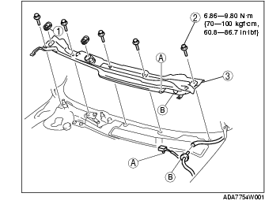

Cowl panel removal/installation
1. Remove the windshield wiper arm and blade. (See WINDSHIELD WIPER ARM AND BLADE REMOVAL/INSTALLATION.)
2. Remove the cowl grille. (See COWL GRILLE REMOVAL/INSTALLATION.)
3. Remove the washer hose grommet from the cowl panel, then disconnect the front washer hose.
4. Remove the connector from the cowl panel.
5. Remove in the order indicated in the table.

6. Install in the reverse order of removal.